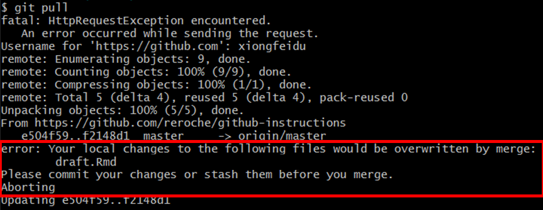

3 Syncing your Local Files with GitHub
3.1 git push
The git push command is used to upload your commits from a local repository to a remote repository. This allows you to make your changes available to the rest of the users of the repository.
3.1.1 Command Line
Open Terminal, and navigate to desired directory:
$ cd ~/cmu/76270/project4/github-instructions/Before continuing, make sure that you have committed your changes you want to push using
git commit. To check the number of unpushed local commits:$ git statusThe terminal output would look as follows:
In the result above, it says that our branch (the local repository) is ahead of
origin/master(the remote repository) by 1 commit. To push these changes:$ git push
The terminal output would look as follows:
- If we now check the number of unpushed local commits using
git status, we notice that our branch is up to date (0 commits behind) with ‘origin/master’.
3.2 git pull
The git pull command is used to transfer changes pushed by other users on the remote repository to the user’s local repository. This allows you to view everyone else’s pushed changes in your local repo.
Open Terminal, and navigate to desired directory:
$ cd ~/cmu/76270/project4/github-instructions/To obtain changes made by other users:
$ git pullIf we succeed, we will see the resulting terminal output:
Note that the green
+represents a line added and a red-represents a line deleted.However, note that sometimes,
git pullis unsuccessful. Usually, this is because the files that we have made local changes that the remote repository does not know about. This case is typically exemplified with the following error message: In that case, we must first commit our local changes using
git addandgit commitas previously specified, or we must stash these changes usinggit stash, which will be explained our upcoming section. After we have done so, we can trygit pullagain.